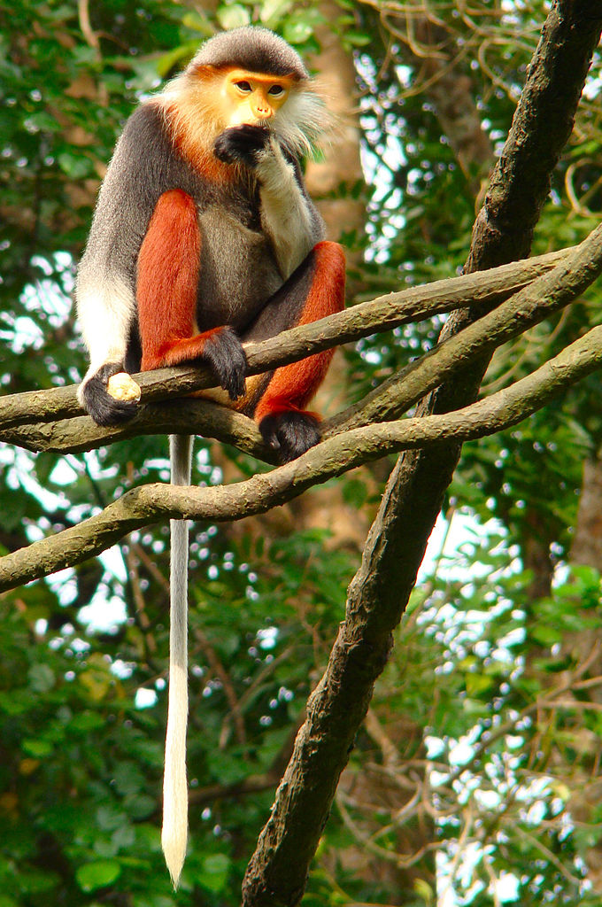

Một số loài động vật cực hay mà bạn có thể chưa biết ( •̀ ω •́ )✧
Tên
Thông tin
Hình ảnh
Video
Gà lôi lam đuôi trắng
Danh pháp khoa học: Lophura hatinhensis. là một loài gà lôi được phát hiện vào năm 1964. Gà lôi lam đuôi trắng là động vật đặc hữu của miền Trung Việt Nam. Giống gà này sống tập trung xung quanh khu vực Khu bảo tồn thiên nhiên Kẻ Gỗ ở tỉnh Hà Tĩnh và Quảng Bình. Sinh cảnh ưa thích của chúng là các vùng rừng tre nứa, các vùng rừng thường xanh đất thấp (dưới 300m so với mực nước biển).
Cà Đác
Cà đác hay còn được biết đến với tên gọi Voọc mũi hếch Bắc Bộ (danh pháp hai phần: Rhinopithecus avunculus) là một loài khỉ Cựu thế giới đặc hữu của vùng Bắc Bộ Việt Nam. Loài này có bộ lông màu trắng và nâu đen, mũi và môi có màu hồng cùng một vùng chuyển màu xanh đặc biệt quanh mắt. Chúng sinh sống trong những thửa rừng ở Tuyên Quang, Cao Bằng, Yên Bái, Quảng Ninh, Hà Giang khoảng cao độ 200 đến 1.200 m (700 đến 3.900 ft).Cà đác được phát hiện vào cuối thập niên 1860 khi giáo sĩ Armand David gửi cá thể đầu tiên sang Châu Âu nhưng mãi đến năm 1912 mới được miêu tả sinh học lần đầu tiên, sau đó được phát hiện lại vào năm 1990 nhưng vẫn cực kỳ quý hiếm.Đến năm 2008, dưới 250 cá thể cá đác được cho là tồn tại và loài này trở thành đối tượng được bảo tồn đặc biệt. Chúng bị đe dọa vì mất môi trường sống và săn bắt trộm, được Liên minh Bảo tồn Thiên nhiên Quốc tế xếp vào hàng mục "loài cực kỳ nguy cấp" và cũng được liệt kê trong Sách đỏ Việt Nam.
Chà vá chân đỏ
Loài voọc này còn có nhiều tên gọi (địa phương) khác như Voọc ngũ sắc, Khỉ chú lính, Giáo hoàng, Dọc, Hoa, Giấu đầu hở đuôi. Đây là loài khỉ sinh sống, ăn và ngủ trên các cành cây trong rừng và hoạt động vào ban ngày. Chà vá chân nâu là loài khỉ ăn lá đặc hữu của vùng Đông Dương, chủ yếu phân bố ở Việt Nam, Lào và một phần nhỏ ở Đông Bắc Campuchia. Hiện nay chúng là một trong những động vật quý hiếm cần được bảo vệ.

Sao la
Sao la (danh pháp khoa học: Pseudoryx nghetinhensis) hay còn được gọi là "Kỳ lân Châu Á" là một trong những loài thú hiếm nhất trên thế giới sinh sống trong vùng núi rừng Trường Sơn tại Việt Nam và Lào được các nhà khoa học phát hiện vào năm 1992. Sao la được xếp hạng ở mức cực kì nguy cấp (có nguy cơ tuyệt chủng trong tự nhiên rất cao) trong Sách đỏ của Liên minh Bảo tồn Thế giới (IUCN) và trong Sách đỏ Việt Nam.
Cá chiên
Cá chiên (danh pháp khoa học: Bagarius bagarius) là một loài cá da láng trong chi Bagarius, tìm thấy trong các con sông lớn ở Nam Á và Đông Nam Á, cụ thể trong lưu vực sông Hằng, sông Mê Kông, sông Chao Phraya; và có thông báo cho thấy nó có trong lưu vực các sông Salween, Maeklong và phần Thái Lan bán đảo.